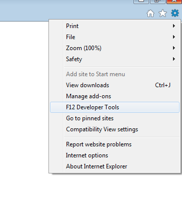

JavaScript Workshop
Goals
- Getting used to the JavaScript console
- Know most common errors/bugs
- Debugging JavaScript
Contents
- JavaScript in a Nutshell
- JavaScript console
- DOM manipulation
- Debugging JavaScript
- Debugging jQuery (Workshop 2)
JavaScript Console
Helpful when
- look for errors
- debugging
- develop (test snippet in environment with long deployment times)
JavaScript Console cont.
Google Chrome
Open using Menu > Tools > JavaScript Console
Interactive console with autocompletion
JavaScript Console cont.
Firefox with Firebug Plugin
Install Web Developer plugin
Open using Menu > Tools > Web Developer > Firebug > Open Firebug, switch to Console tab
Interactive console with autocompletion
JavaScript Console cont.
Safari
Enable Develop Menu
Open using Menu > Develop > Show Error Console
Interactive console with autocompletion
JavaScript Console cont.
Internet Explorer
Open using Settings > F12 Developer Tools (or click F12)

Interactive console with autocompletion
Warm-up - Manipulate DOM
Goal
get a feel for the console
Tasks on bluesky-it.ch
using console, don't use jQuery (jQuery or $)
- remove jumper
- count number of h1 headings
- change color of "Willkommen bei derBluesky IT-Solutions AG" to red
- navigate from home to contact page
- find browser version
Warm-up - Manipulate DOM - Hints
document.getElement[s]By[...]
- to get better autocomplete support, assign result of a function call to a variable
var foo = document.getElementById("foo");
- html attributes, e.g.
<span style="border: 1px solid grey"></span>
- document, location, history, navigator
Warm-up - Manipulate DOM - Possible Solutions
- remove jumper
document.getElementById('jumper').remove()
document.getElementById('jumper').setAttribute("style", "visibility: hidden")
document.getElementById('jumper').style.display = 'none'
- count number of h1 headings
document.getElementsByTagName('h1').length
- change color of "Willkommen bei derBluesky IT-Solutions AG" to red
var title = document.getElementsByClassName('title')[0];
title.setAttribute("style", "color: red");
- navigate from home to contact page
location = "/Wir/Kontakt.html"
function getLinkByContent(searchText) {
var aTags = document.getElementsByTagName("a");
for (var i = 0; i < aTags.length; i++) {
if (aTags[i].innerText.trim() === searchText) {
return aTags[i];
}
}
}
var link = getLinkByContent("KONTAKT");
location = link.getAttribute("href");
//or
link.click();
- find browser version
navigator.userAgent
How to debug JavaScript
-
using JavaScript console debugging
- using debug statements console.log() and console.debug() (need access to sources)
- using alert statements alert(); (need access to sources)
Exercises
- check out source
- each bug in a separate folder
- open index.html in browser
- it contains a short description what should happen if the bug weren't there
- find issue using JavaScript console, element inspection etc.
- open source files in text editor and fix issue
Excercises - Solutions
File includes
- one included file breaks another (global namespace); issue1
- forgot to include a required file; issue2
- forgot to include a required library; issue3
Execution order
- function is called before the script where it is defined is included; issue4
- computation intensive stuff prevents image from loading on time; issue5
Type mismatches
- argument passed is an array, parameter expected is a string (related to getElementsByClassName()); issue6
- argument passed is an array, parameter expected is an object (related to getElementsByTagName()); issue7
Casting
- condition is falsy instead of false; issue8
Content Workshop 2
- Recap
- Modules
- DOM
- Debugging jQuery
Exercises
- check out source
- each bug in a separate folder
- open index.html in browser
- it contains a short description what should happen if the bug weren't there
- find issue using JavaScript console, element inspection etc.
- search jQuery documentation, plugin repos etc.
- open source files in text editor and fix issue
Excercises 2 - Solutions
File includes
- forgot to include a required file; issue9
- one included file breaks another (assignment instead of comparison); issue10
Versions
- included jQuery version is much older than dependent jQueryUI version; issue11
Minification
- can't step through minified JavaScript file; include normal version in order to debug step by step; issue12
Monkeypatch
- monkeypatch of basic function breaks library; issue13